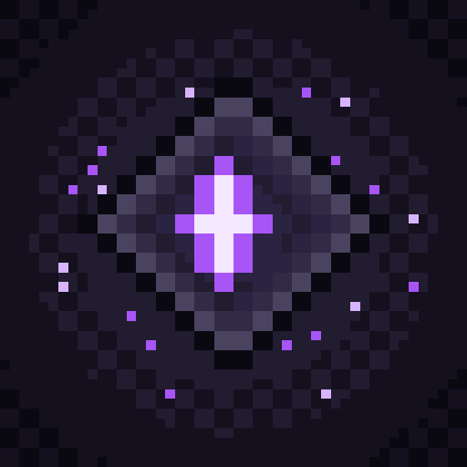
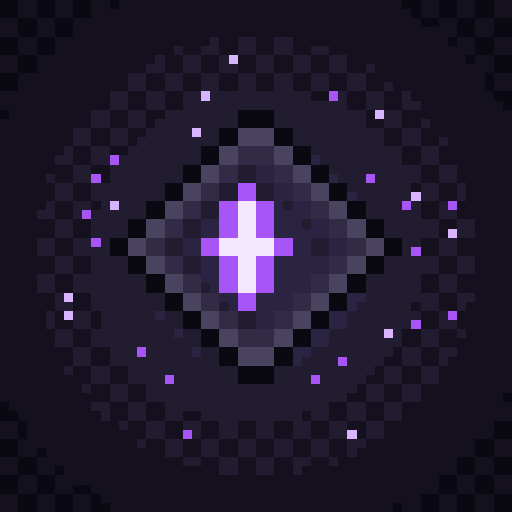

The Naevyr/DRIFTS emblem on a dark drift-stone field. SVGs carry a small native viewBox sized to the exact target px — crisp at any raster. maskable keeps the emblem inside the Android safe-zone; the notif badge is a flat monochrome silhouette the OS tints.


